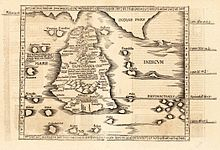

According to the Mahāvamsa, a Pāḷi chronicle written in the 5th century CE, the original inhabitants of Sri Lanka are said to be the Yakshas and Nagas. Ancient cemeteries that were used before 600 BCE have also been discovered in Sri Lanka.[49] Sinhalese history traditionally starts in 543 BCE with the arrival of Prince Vijaya, a semi-legendary prince who sailed with 700 followers to Sri Lanka, after being expelled from Vanga Kingdom (present-day Bengal).[50] He established the Kingdom of Tambapanni, near modern-day Mannar. Vijaya (Singha) is the first of the approximately 189 monarchs of Sri Lanka described
| Province | Capital |
| North Central | Anuradhapura |
| Uva | Badulla |